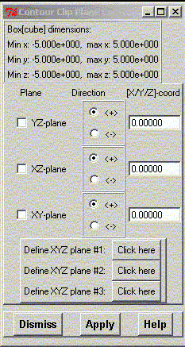

**************************************************************************
Contour Clip Plane Widget
Leif Laaksonen CSC 2001
**************************************************************************
Control the clip plane through the contour surface grid data. The planes are defined to be perpendicular to the x, y and z axis.
It is now also possible to define 3 different arbitrary XYZ planes.
You can also change the coordinate value(s) and then press the "Apply" button to get it displayed.

Line command: see plot command
**************************************************************************
LUL/2001
**************************************************************************